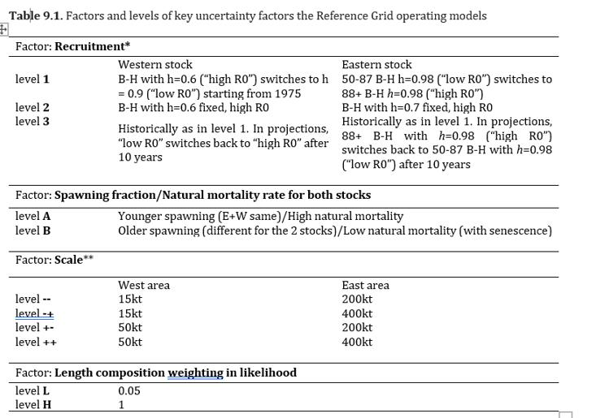
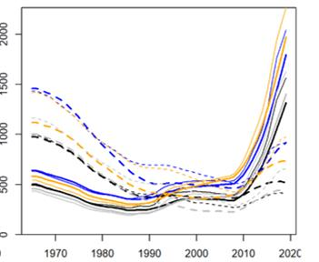
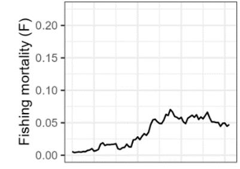
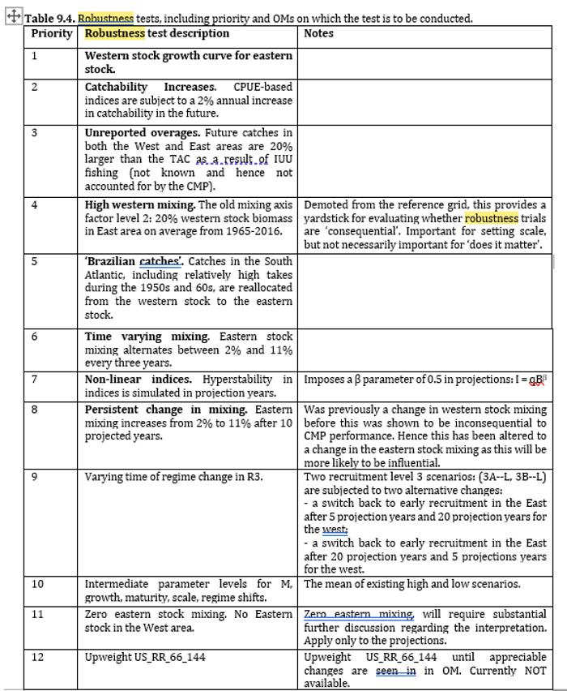
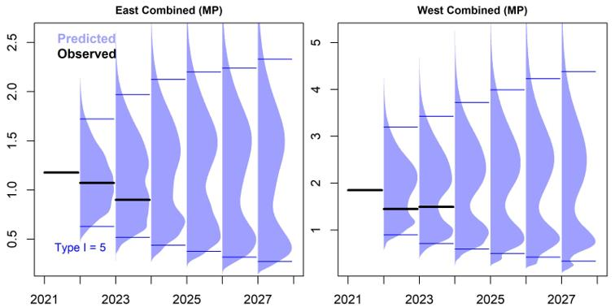

Summary
OM/CMP |
MP |
EC Protocol |
Developed |
Adopted |
Adopted |
2010-2017 |
2017 |
2021 |
Next OM recondition: 2025 |
Applications to TAC |
EC Evaluation Not detected (2022-2024) |
Introduction
MSE work for northern albacore began officially with Recommendation by ICCAT to establish harvest control rules for the North Atlantic albacore stock (Rec. 15-04). The development of the interim HCR at ICCAT was based on simulations conducted using a specifically designed (MSE) framework.
The software for the simulations was reviewed in 2018 (SCRS, 2019). The SCRS concluded that the advice provided was robust to a wide range of uncertainties. The ICCAT Commission adopted in 2017 the Recommendation by ICCAT on a harvest control rule for North Atlantic albacore supplementing the Multiannual Conservation and Management Programme, Rec. 16-06 (Rec. 17-04), which included an interim harvest control rule for North Atlantic albacore (Thunnus alalunga), representing the first harvest control rule adopted by ICCAT. The Commission reviewed the interim HCR in 2021 (Recommendation by ICCAT on conservation and management measures, including a Management Procedure and Exceptional Circumstances Protocol, for North Atlantic albacore (Rec. 21-04)) with a view to adopting a long-term management procedure. The Commission also adopted the Exceptional Circumstances protocol for North Atlantic albacore in 2021 (Rec. 21-04, Annex 2). The ICCAT Commission has since 2021 adopted the TAC recommendation for northern Atlantic albacore based on the Management Procedure that included the evaluation of the Exceptional Circumstance protocol every year by the SCRS.
Operating Model Development
User guide |
App |
Codes |

|
||
TSD Package CMP |
Operating Models (OM)
All development works done in 2013-2017.
OM is based on 2015 Multi-fan CL stock assessment.
OM historical period years: 1950-2015
Indices: BB, LL,
Reference Grid: Key Uncertainty Factors

Reference Grid: Results
Summary OMs |
Individual OMs |
More |
 |


Robustness Test
Summary OMs |
Individual OMs |
More |
|

Management Objectives
Stock Status |
Safety |
Yield |
Stability |
Prob >= 60% in green quadrant |
Prob < 15% of stock falling below Blim |
Maximize overall catch |
TAC changes +20%/-35% between periods |
Management Procedure Development
Candidate Management Procedures
Five CMPs were originally developed, following 3 CMPs were sent to the Commission for their final selection in 2024.
MCC9 : MCC is ……
MCC11 : MCC is ……
SPSS : SPSS is ……
Management Procedure
COMM. Adopted MCC9 as a Management Procedure in 2024

Exceptional Circumstances
COMM. Adopted Exceptional Circumstances Protocol in 2024. Rec.24-11 App1
- Review annually
- Index check
SCRS evaluated annually (2022-2024).
There is NO Exceptional Circumstances.

References
Recommendations/Resolutions
Meeting Reports
SCRS documents/presentations